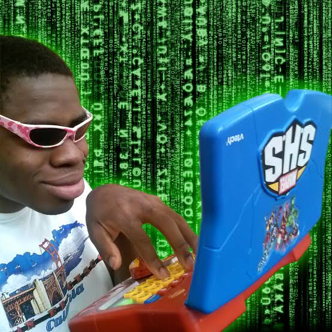

Project ini merupakan pengembangan sebuah program sederhana yang dibuat untuk membantu pengguna mengelola dan mengolah data secara lebih mudah melalui sistem berbasis pemrograman. Program dirancang dengan menggunakan konsep dasar pemrograman seperti input data, proses pengolahan, percabangan, perulangan, fungsi, serta pengelolaan data.
Tujuan utama project adalah membuat program yang tidak hanya dapat menerima dan menampilkan data, tetapi juga menyediakan beberapa fitur pengolahan data sesuai kebutuhan pengguna. Program dibuat dengan alur yang sederhana agar mudah digunakan dan dipahami, terutama bagi pengguna yang masih berada pada tahap awal mempelajari pemrograman.
Dalam pengembangannya, program memperhatikan hubungan antara input, proses, dan output. Pengguna memberikan data sebagai input, kemudian program melakukan proses berdasarkan kondisi atau pilihan yang diberikan, dan menghasilkan output berupa informasi yang sesuai. Dengan demikian, project ini dapat menjadi contoh penerapan konsep pemrograman dalam menyelesaikan permasalahan secara sistematis.
Tahap research dan discovery dilakukan untuk mengetahui kebutuhan pengguna serta menentukan fitur yang diperlukan dalam program. Proses ini dimulai dengan mengidentifikasi permasalahan yang dapat diselesaikan menggunakan sistem terkomputerisasi.
Berdasarkan hasil identifikasi, program membutuhkan sistem yang mudah digunakan, memiliki alur yang jelas, serta mampu mengolah data berdasarkan pilihan pengguna. Oleh karena itu, beberapa konsep dasar pemrograman digunakan untuk mendukung kebutuhan tersebut, seperti percabangan untuk menentukan kondisi, perulangan untuk menjalankan proses secara berulang, fungsi untuk mengelompokkan proses tertentu, dan pengelolaan data untuk menyimpan informasi.
Pada tahap ini juga diperhatikan bagaimana pengguna berinteraksi dengan program. Menu dibuat agar pengguna dapat memilih fitur yang dibutuhkan tanpa harus menjalankan proses secara terpisah. Selain itu, program dibuat agar dapat memberikan informasi atau pesan ketika pengguna memasukkan data yang tidak sesuai atau memilih suatu tindakan tertentu.
Hasil dari tahap research dan discovery kemudian digunakan sebagai dasar dalam menentukan struktur program, alur proses, fitur utama, serta bentuk output yang akan ditampilkan kepada pengguna.
Hasil utama dari project ini adalah terciptanya sebuah program yang mampu menjalankan proses pengolahan data sesuai dengan kebutuhan yang telah ditentukan. Program dapat menerima input dari pengguna, memproses data berdasarkan aturan yang diberikan, dan menampilkan hasil dalam bentuk output yang mudah dipahami.
Penerapan percabangan membuat program mampu mengambil keputusan berdasarkan kondisi tertentu, sedangkan perulangan memungkinkan pengguna menggunakan menu atau menjalankan proses tanpa harus memulai program kembali. Penggunaan fungsi juga membuat struktur program menjadi lebih terorganisir dan memudahkan proses pengembangan.
Secara keseluruhan, project ini menunjukkan bahwa konsep dasar pemrograman dapat digunakan untuk membuat solusi yang lebih terstruktur terhadap suatu permasalahan. Selain menghasilkan program yang dapat digunakan, project ini juga memberikan pemahaman mengenai bagaimana proses analisis kebutuhan diterjemahkan menjadi fitur dan alur program yang dapat dijalankan.